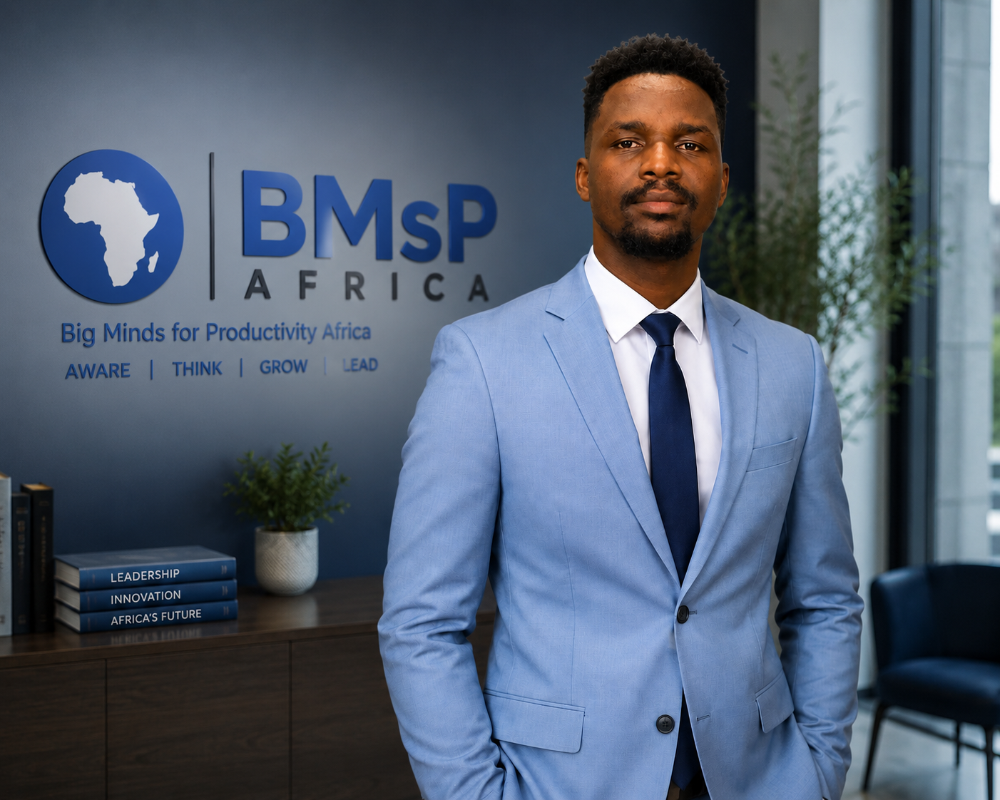

Jeremiah
Mathew Manga
Founder & Executive Director, BMsP AFRICA
Building a platform that helps young people transform their potential into meaningful and productive action.

“When individuals discover who they are, develop how they think, and apply what they have learned, they can create opportunities not only for themselves but also for others.”— Jeremiah Mathew Manga

A life shaped by data, development & people.
Jeremiah Mathew Manga is a Nigerian humanitarian, Data Analyst, youth development advocate, and the Founder of BMsP AFRICA (Big Minds for Productivity Africa). He is passionate about human development, youth empowerment, leadership, entrepreneurship, and helping individuals discover and develop their hidden abilities and potential.
Born in 1999 in Yelwa, Yauri Local Government Area of Kebbi State, Nigeria, Jeremiah comes from a family with roots in Zuru Local Government Area. His educational journey began at St. Dominic Primary School, Salama, followed by Government Science Secondary School, Yelwa-Yauri. He later attended Kebbi State University of Science and Technology, Aliero (KSUSTA), where he obtained a Bachelor of Science (B.Sc.) in Statistics.
Jeremiah completed his National Youth Service Corps (NYSC) service in Sokoto State, Nigeria. During his service year, he gained valuable experience through work connected with the National Primary Health Care Development Agency (NPHCDA), particularly in Monitoring and Evaluation (M&E) and Disease Control activities. He also participated in community and development-related activities as a youth corps member.
As a Data Analyst and Field Supervisor, Jeremiah has developed hands-on experience in data collection, data management, data cleaning, validation, analysis, field supervision, quality assurance, reporting, and supporting evidence-based decision-making. His work has involved supporting health and development-related projects and coordinating field activities to help ensure accurate, reliable, and timely data.
He has worked as a Consultant with the Christian Health Association of Nigeria (CHAN) and as a Database Entry Encoder with Médecins Sans Frontières (MSF). Through these experiences and other health and development projects, he has strengthened his understanding of data systems, field coordination, humanitarian support, monitoring, and community-focused interventions.
From potential
to productive action.
Through BMsP AFRICA, Jeremiah seeks to promote self-awareness, critical thinking, leadership, entrepreneurship, innovation, and community transformation among young Africans.
His long-term vision is to contribute to raising a generation of self-aware, productive, innovative, and responsible leaders who can create sustainable opportunities, build enterprises, solve real problems, and positively transform their communities.